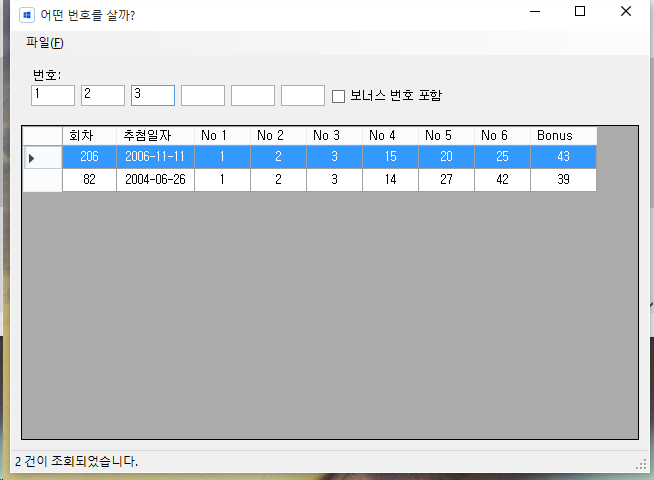

어떤 번호를 살까?
버전: v1.0.1.0
웹페이지 : http://bbon.kr/lottomk2
번호확인
구입하려고 하는 번호를 하나씩 입력하면 입력된 번호들이 포함된 1등 당첨번호가 아래쪽 리스트에 출력됩니다.
리스트에 출력되는 항목이 없으면 입력한 번호는 당첨내역에 존재하지 않는 번호 조합입니다.
입력된 번호가 당첨내역 정보를 검색할 때, 보너스 번호를 포함해서 검색하려면 보너스 번호 포함 체크박스를 선택합니다.

당첨번호 입력
파일메뉴 > 당첨번호관리를 실행합니다.
추가
리스트의 아래쪽으로 스크롤바를 움직이면 빈 행이 있습니다.
빈 행에 회차, 추첨일자, 당첨번호를 입력하고 저장 버튼을 클릭합니다.
수정
수정할 리스트의 항목을 선택하고 각 필드의 값을 변경하고 저장 버튼을 클릭합니다.
삭제
삭제할 리스트의 항목을 선택하고 삭제 버튼을 클릭합니다.
데이터베이스 파일 가져오기
도구 > 데이터베이스 > 가져오기 를 실행합니다.
파일을 선택하는 창이 열리고, 가져올 데이터베이스 파일을 선택하고 열기를 클릭합니다. 파일 복사된 후 검색 버튼을 클릭해서 자료를 잘 가져왔는지 확인합니다.
데이터베이스 파일 내보내기
도구 > 데이터베이스 > 내보내기 를 실행합니다.
파일을 선택하는 창이 열리고, 파일을 저장할 위치로 이동한 후 저장할 파일이름을 입력하고 저장버튼을 클릭합니다.